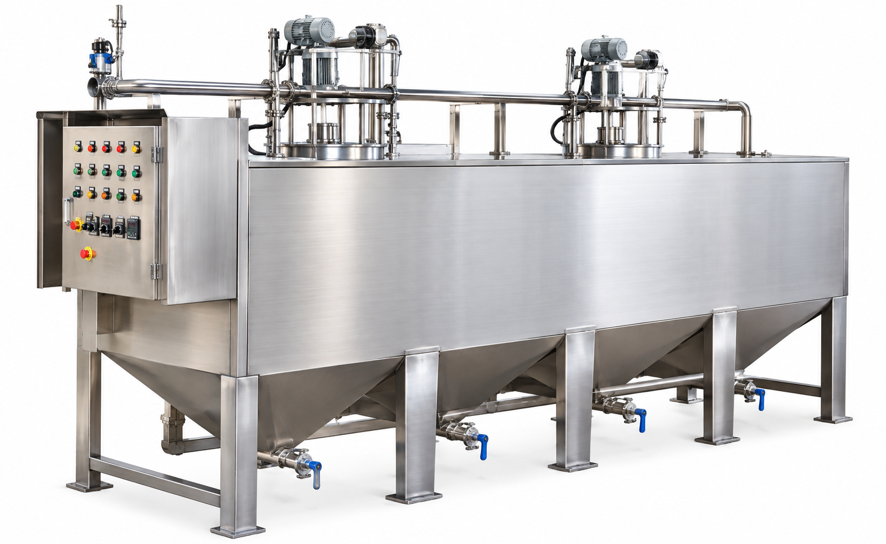
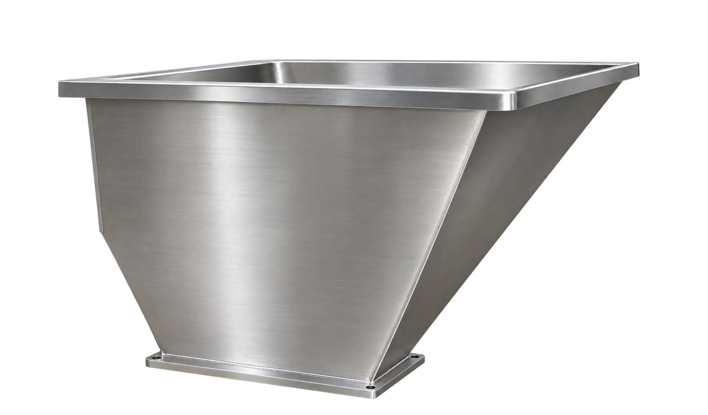
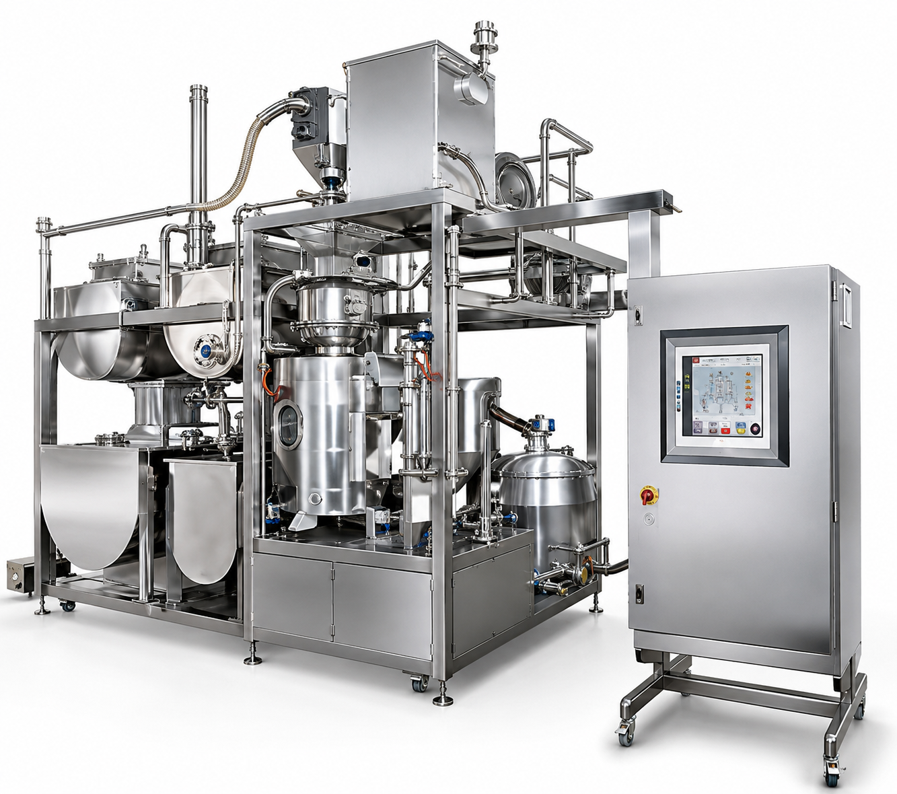
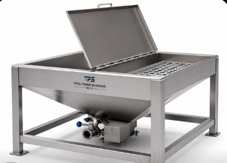
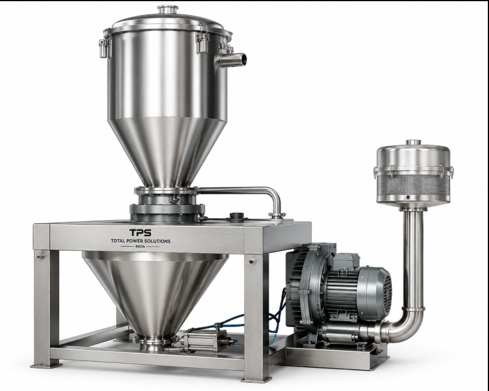
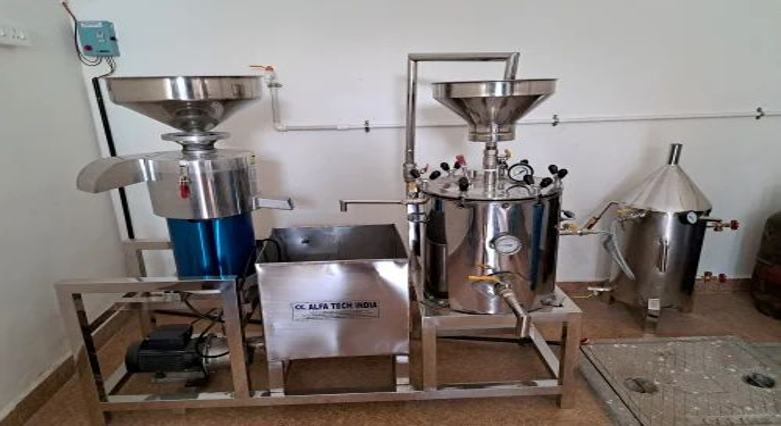
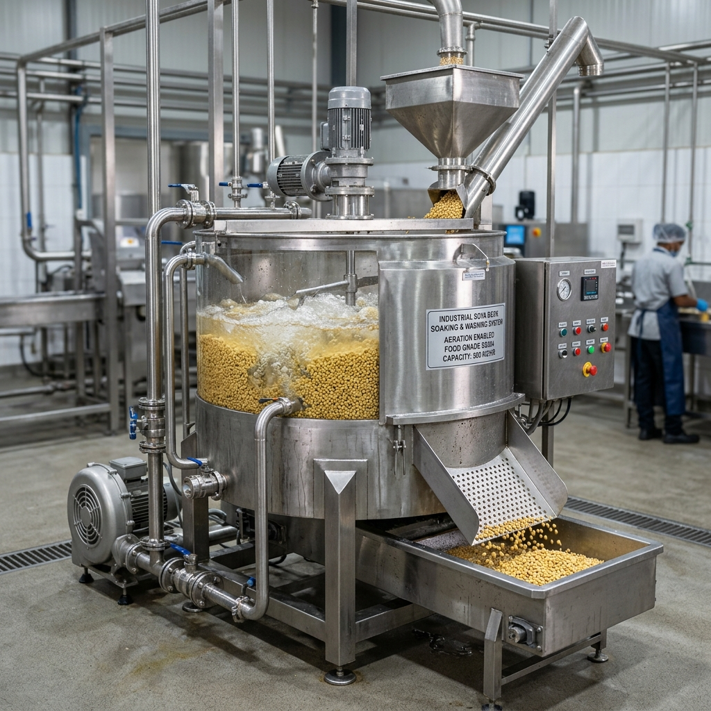
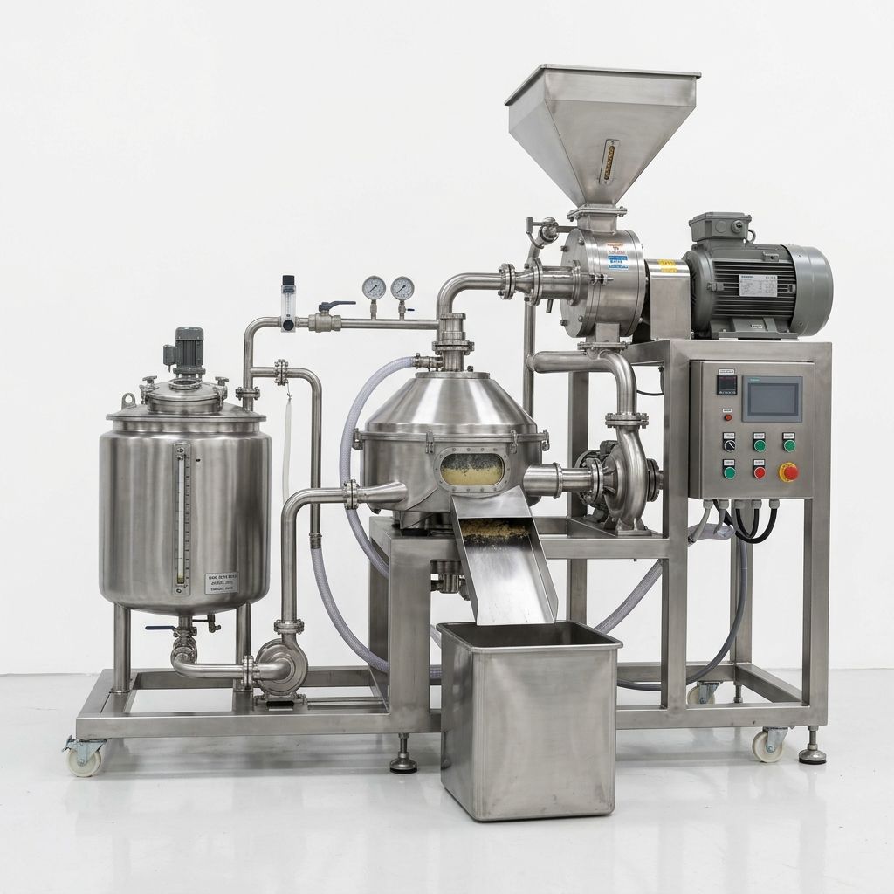
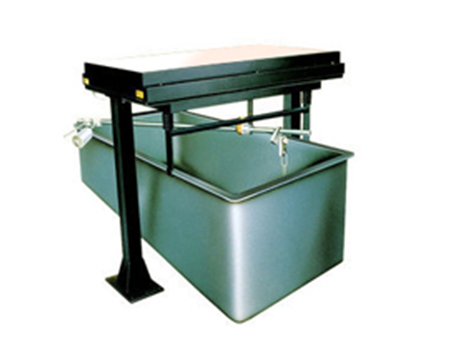
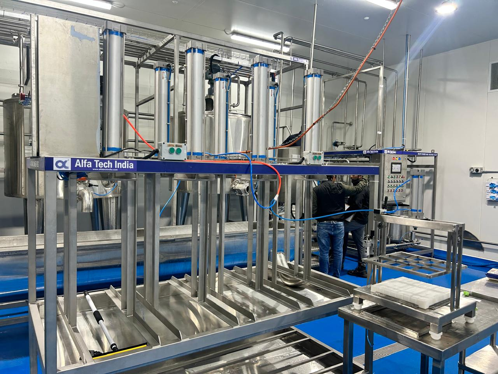

ALFA TECH INDIA
DAIRY & FOOD PROCESSING EQUIPMENT SINCE 1990s
DAIRY & FOOD PROCESSING EQUIPMENT SINCE 1990s






Complete turnkey production line for extraction, cooking, filtration, homogenization, and aseptic packaging of high-protein Soya Milk, Tofu (Soya Paneer), and Soya Curd.
Soya Milk is an inexpensive and remarkably versatile high-protein food made from soya beans. It is a nutritious white liquid extracted from soybean seeds. Unlike animal dairy, soya milk is 100% free from cholesterol and low in saturated fats.
The protein quality in soya milk is comparable to chicken protein while containing low calories. It serves as an excellent food for infants, children, elderly individuals, and lactating women due to its easily digestible vegetable protein.
With surging health consciousness, soya product acceptance is booming across India in forms like Tofu (soya paneer), Soya Curd, textured vegetable protein (soya nuggets), and fortified beverages.
As India is predominantly a vegetarian country, experts project the Soya Food Industry to grow over 20% annually. Derivatives like Tofu are extensively used in dishes (Matar Paneer, Palak Paneer), soya burgers, patties, sandwiches, and desserts.
Our turnkey soya milk plant includes 12 specialized machines for seamless automated operation:
Class of storage equipment specifically designed for raw dry soybean raw material with small granule composition storage.
Pneumatic/conveyor machine used to transfer raw soybeans automatically into the Soaking & Washing machine.

Employs compressed air water injection to agitate and roll beans, separating floating bad beans & impurities via overflow discharge.

High-speed wet grinder to process soaked soybeans into soy milk while separating liquid extract from pulp.
Specialized screw/air discharge machine used after grinding to automatically transport and collect Okara (soya pulp residue).
Digital time & temperature control panel for steam/electric cooking of soy milk, inactivating trypsin inhibitors and eliminating bean odor.
Insulated SS 304 buffer storage tank (1,000L - 10,000L capacity) for temporary storage and controlled feeding to downstream machines.
High-shear agitator tank used to dissolve precise quantities of sugar, flavors, and vitamins into the soya milk.

Dual SS duplex filters that eliminate fine pulp particles, expanded boiled residues, and sugar lumps for smooth consistency.

Forces soy milk through micro-apertures at high velocity to reduce fat & protein globule size, preventing creaming or separation.

Aseptic PHE pasteurization unit that destroys micro-bacteria, extending shelf life for Long Life Soya Milk & juices.

Automatic pouch/bottle filling and hermetic sealing unit for quantitative packaging ready for market distribution.
Estimated factory price breakdown for complete Soya Milk processing equipment:
| S No. | Machine Description | Unit | Estimated Price (₹) |
|---|---|---|---|
| 01 | Soyabean Soaking and Washing Machine | 1 | ₹ 2,00,000 |
| 02 | Plate Heat Exchanger Pasteurizer | 1 | ₹ 60,000 |
| 03 | Homogenizer (Capacity: 300 Ltr/hr) | 1 | ₹ 1,95,000 |
| 04 | Soyabean Transferring Machine | 1 | ₹ 1,75,000 |
| 05 | Soyamilk Storage Tank (Capacity: 1000 - 10000 Ltr) | 1 | ₹ 80,000 |
| 06 | Sugar & Flavor Dissolving Machine | 1 | ₹ 1,50,000 |
| 07 | Soyamilk Filling and Sealing Equipment (1500 - 2200 Pouch/Hr) | 1 | ₹ 1,50,000 |
| 08 | Grinding and Separating Machine | 1 | ₹ 1,00,000 |
| 09 | Okara Transportation Machine | 1 | ₹ 90,000 |
| 10 | Soy Milk Cooking Machine | 1 | ₹ 1,70,000 |
| 11 | Soy Milk Twin Filter Machine | 1 | ₹ 20,000 |
| 12 | Other Machineries, Piping & Accessories | Set | ₹ 40,000 |
| Total Estimated Plant Machinery Cost: | ₹ 14,30,000 | ||
Soya milk is manufactured from clean whole soya beans. The raw dry beans are first soaked in clean water for a minimum of 3 hours up to overnight depending on water temperature. Rehydrated beans then undergo wet grinding with water added in a 10:1 ratio to produce slurry with 1% to 4% protein content.
The slurry is brought to a boil for 15–20 minutes with anti-foaming agents to heat-inactivate soybean trypsin inhibitors, eliminate raw bean smell, and sterilize the product. Insoluble Okara pulp is removed by centrifugal filtration, followed by sugar formulation, homogenizing, plate heat exchanger sterilization, and automatic pouch/carton packaging.